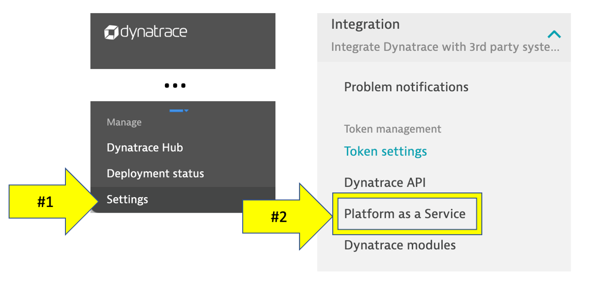
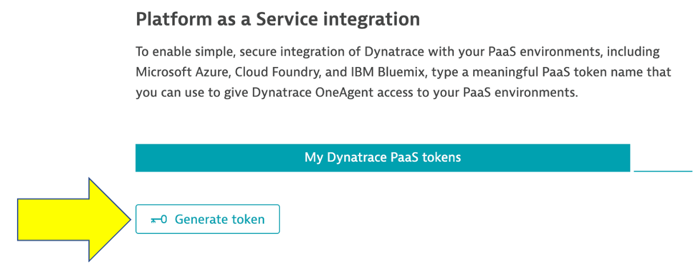
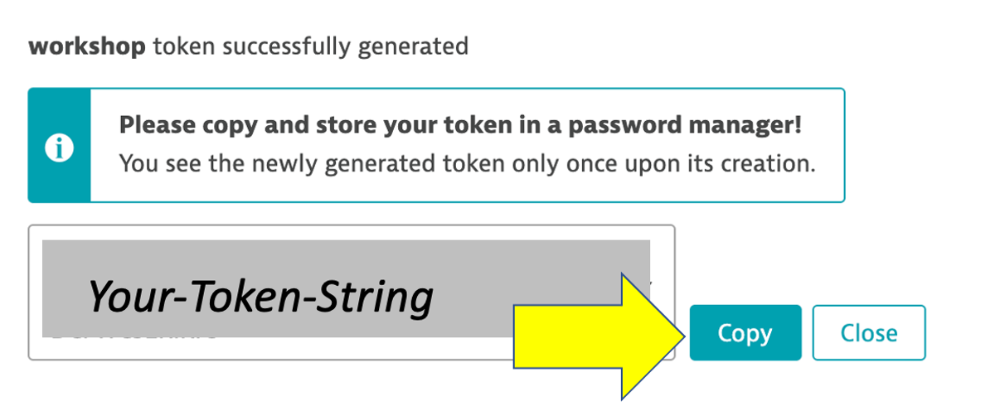

We will now setup Dynatrace, AWS, and the workshop environment. You need all of these in place before you are presented with the lab exercises.
Objectives of this section
🔷 Ensure your Dynatrace account is ready
🔷 Ensure your AWS Account is ready
🔷 Create and gather Dynatrace URLs & Tokens needed to provision the workshop
Dynatrace Tenant

For this workshop you will use a 15-day free Dynatrace evaluation of the full feature set of our all-in-one performance monitoring platform to monitor AWS resources and complete the workshop exercises and to use once the workshop is complete.
To sign up for a 15-day trial, navigate to this URL:
- https://www.dynatrace.com/trial
- You can use your work email even if you are an existing Dynatrace customer
- If you have any issues email
alliances-help@dynatrace.com
Once you sign up:
- it will then take about 5 minutes to provision your Dynatrace tenant
- you will be sent an email to set your password and y
To complete the workshop, you will also need an AWS account to complete the workshop exercises. Please review the following options and proceed to the appropriate section below.
OPTION 1: I have an AWS event engine code
To complete this workshop, you will be provided with an AWS account via the AWS Event Engine service. A team hash will be provided to you by event staff.
1 . If you are currently logged in to an AWS Account, you can log out using this link
2 . Connect to the portal by clicking the button or browsing to https://dashboard.eventengine.run. The following screen shows up. Enter the provided hash in the text box. The button in the bottom right corner changes to Accept Terms & Login. Click on that button to continue.

3 . Once on the Team dashboard page, click the AWS console button that opens a popup.

4 . On the popup, click on Open AWS console button which opens the AWS portal.

5 . One the new browser tab, you should see the AWS portal.

6 . Once you are in the AWS portal, you can now move to the next section.
OPTION 2: I am running the workshop in my own AWS account
This workshop requires an AWS account where there is IAM user/identity that has proper permissions to set up the necessary AWS components to work through the workshop.
Negative:
- You are responsible for the cost of the AWS services used while running this workshop in your AWS account.
- You will need permission to add/delete: VPCs/subnets/Routes/IGWs/Route tables, CloudFormation Stacks, and EC2s/security groups/keypairs.
- If you are using an AWS trial account, you should have
AdministratorAccesspolicy, so this is all you need. - If you are using an account owned by your organization, please ensure you have the right permissions and authority.
- If you are using an AWS trial account, you should have
If you already have an account, you can skip the setting up your AWS account section below
Setting up your AWS account
1 . If you don't already have an AWS account with Administrator access: create one now by clicking here
2 . Once you have an AWS account, ensure you are following the remaining workshop steps as an IAM user with administrator access to the AWS account: Create a new IAM user to use for the workshop
3 . Enter the user details: 
4 . Attach the AdministratorAccess IAM Policy: 
5 . Click to create the new user: 
6 . Take note of the login URL and save: 
7 . Once you are in the AWS portal, you can now move to the next section.
1. Make sure you are in the correct region
Click the region button in the top right corner of your AWS console and make sure you are in Oregon us-west-2 for consistency in this lab.

2. Open up Cloudshell
In this lab, we will be using AWS Cloudshell. Cloudshell is a browser-based shell that makes it easy to securely manage, explore, and interact with your AWS resources.
To open the Cloudshell, click on the Cloudshell icon at the top of the AWS console. This make take a minute to complete.

This may open up a slash page.

After closing the pop-up, wait a minute for the Cloudshell to initialize. When this is done, you will see the command prompt as shown below.

3. Clone the workshop scripts
Once you have the Cloudshell open, you need to get some scripts that will automate the workshop setup. Run this command:
git clone https://github.com/dt-alliances-workshops/aws-modernization-dt-orders-setup.git
It should look like this:
[cloudshell-user@ip-10-0-52-50 ~]$ git clone https://github.com/dt-alliances-workshops/aws-modernization-dt-orders-setup.git
Cloning into 'aws-modernization-dt-orders-setup'...
remote: Enumerating objects: 161, done.
remote: Counting objects: 100% (161/161), done.
remote: Compressing objects: 100% (96/96), done.
remote: Total 161 (delta 72), reused 143 (delta 60), pack-reused 0
Receiving objects: 100% (161/161), 19.82 MiB | 22.21 MiB/s, done.
Resolving deltas: 100% (72/72), done.
The next steps of this guide will have you gather various information from your environment needed to provision and setup your environment and for exercises later in the workshop.
From your Dynatrace environment, you will capture:
- Base URL
- Environment ID
- API token
- PaaS token
Capture Inputs Script
In the code repo you cloned, there is a simple UNIX shell script for this workshop that prompts for these values and writes them to a file called workshop-credentials.json. Later in the workshop steps, there are a few other simple UNIX shell scripts that will automate the step that reads this file so that you don't need to type or copy-paste these values over and over again during the workshop.
So start by running this script that will provide prompts. Follow the sections below to get these values and paste them against the prompt. If you mess up, you can re-run the script.
1 . Run inputs script
cd ~/aws-modernization-dt-orders-setup/provision-scripts
./input-credentials.sh
2 . Login into Dynatrace.
Input 1 of 4: Your last name
In the UNIX terminal, enter your last name at the prompt.
Positive: This will be added as a prefix for the provisioned resources.
Input 2 of 4: Dynatrace Base URL
1 . Copy the Dynatrace base URL from your browser, for example: https://[ENVIRONMENT ID].live.dynatrace.com
2 . Back in the UNIX terminal, paste the value for the Dynatrace Base URL prompt.
Input 3 of 4: Dynatrace PaaS Token
1 . From the Dynatrace left side menu, select Settings. Under the Integrations sub-menu, click the Platform as a Service option

2 . Click the Generate Token button, Enter a name for your token (e.g. workshop), then click the Generate button

3 . Use the Copy button

4 . Back in the UNIX terminal, paste the value for the Dynatrace PaaS Token prompt
Input 4 of 4: Dynatrace API Token
1 . From the Dynatrace left side menu, select Settings. Under the Integrations sub-menu, click the Dynatrace API option

2 . Click the Generate Token button, Enter a name for your token (e.g. workshop), then click the Generate button

3 . Expand both the API V2 and API V1 section and enable permissions as shown below
4 . Use the Copy button

5 . Back in the UNIX terminal, paste the value for the Dynatrace API Token prompt
Verify
Your completed data entry should look like this:
Please confirm all are correct:
--------------------------------------------------
Your last name : jones
Dynatrace Base URL : https://ABC.live.dynatrace.com
Dynatrace PaaS Token : zzzzzzzzzzzzzzzzzzzzzzz
Dynatrace API Token : ggggggggggggggggggggggg
--------------------------------------------------
derived values
--------------------------------------------------
Dynatrace Environment ID : ABC
===================================================================
Is this all correct? (y/n) : y
===================================================================
Saved credential to: ../gen/workshop-credentials.json
{
"RESOURCE_PREFIX": "jones",
"DT_BASEURL": "https://ABC.live.dynatrace.com",
"DT_ENVIRONMENT_ID": "ABC",
"DT_PAAS_TOKEN": "zzzzzzzzzzzzzzzzzzzzzzz",
"DT_API_TOKEN": "ggggggggggggggggggggggg",
"AWS_REGION": "us-west-2"
}
After you confirm, the script will show the saved values in the ~/aws-modernization-dt-orders-setup/gen/workshop-credentials.json file.
Fixing Inputs
If you mess up, you can re-run the script again and will prompt you again for each value.
cd ~/aws-modernization-dt-orders-setup/provision-scripts
./input-credentials.sh
In this section, you should have completed the following:
✅ Ensure your Dynatrace account is ready
✅ Ensure your AWS Account is ready
✅ Create and gather Dynatrace URLs & Tokens needed to provision the workshop
Next Steps
You are now ready to proceed with the labs where you provision resources and follow the lab guides.